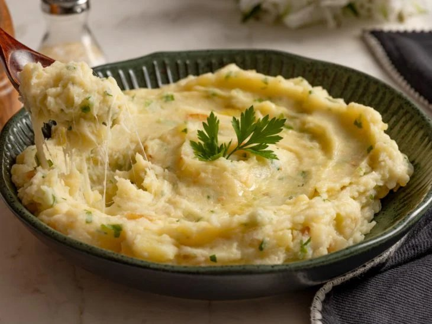

Purê

Purê de batata
Este é um acompanhamento simples, mas o tempero caprichado e textura macia fazem todo mundo querer repetir! Uma dica para ter um purê de batata bem cremoso é agregar o leite e o queijo mussarela na receita. Para uma versão mais gourmet, troque a mussarela por provolone ou gorgonzola.
Ingredientes
- 5 batatas grandes (750 gramas)
- 1 xícara de chá de leite (240 ml)
- 1 colher de sopa de azeite
- 1 colher de sopa de manteiga
- 2 dentes de alho
- 1 cebola pequena (50 gramas)
- 1/3 de colher de chá de pimenta-do-reino (ou a gosto)
- 100 gramas de queijo mussarela ralado
- 2 colheres de sopa de cheiro-verde (ou a gosto)
- 2 colheres de chá de sal (ou a gosto)
- 1,2 litros de água para cozinhas as batatas
Modo de preparo
- Para fazer esse purê simples, já descasque e amasse os alhos. Descasque e pique também a cebola em cubinhos. Pique o cheiro-verde finamente. Separe todos os ingredientes;
- Descasque e corte as batatas antes de cozinhar, para agilizar o processo. Leve uma panela com água ao fogo alto e adicione as batatas. Tempere com sal, misture e deixe cozinhar por 20 minutos ou até a batata ficar macia;
- Desligue o fogo, retire as batatas da panela com uma escumadeira e reserve-as em uma peneira. Descarte a água da panela e pincele azeite no fundo;
- Ligue o fogo médio. Acrescente a cebola picadinha e refogue até murchar um pouco. Junte o alho e mexa até dourar. Adicione a manteiga e desligue o fogo novamente - ela vai derreter no próprio calor da panela.
- Amasse as batatas cozidas rapidamente com um garfo ou um amassador e passe para a panela;
- Tempere com pimenta-do-reino, acerte o sal, despeje metade do leite e ligue o fogo baixo. Misture para incorporar;
- Após 3 minutos mexendo, prove e acerte os temperos se sentir necessidade. Junte o restante do leite, o queijo e cozinhe por mais 5 minutos ou até o queijo derreter completamente;
- Finalize com o cheiro-verde e misture bem. Agora é só desligar o fogo e servir. Aproveite esse purê de batata simples acompanhando uma carne!
Voltar